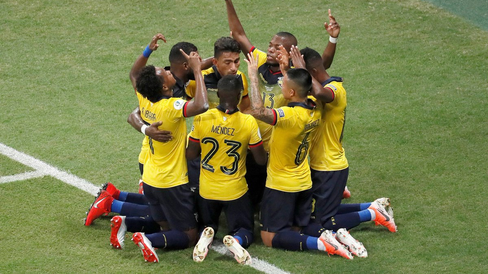
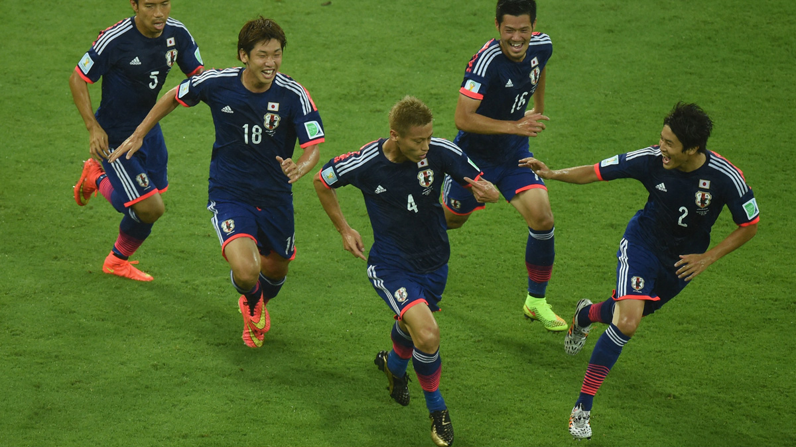

La ‘celeste’ está en pleno proceso de renovación para los próximos grandes desafíos que tendrá a futuro. La buena noticia es que el recambio se ha dado de forma natural, y el Maestro Óscar Washington Tabarez ha encontrado una nueva generación que le permite a Uruguay llegar como uno de los favoritos del certamen.
En Brasil es posible encontrar algunos sobrevivientes del último título de Copa América de Uruguay en 2011 como Fernando Muslera, Diego Godín, Luis Suárez y Edinson Cavani junto a una segunda camada que ya comenzó a ganar protagonismo como Giovanni González, Maxi Gómez, Marcelo Saracchi y Giorgian De Arrascaeta.
Ecuador
El gran sueño imposible
Tras el fracaso en el proceso para llegar al Mundial de Rusia 2018, Ecuador busca renovar su selección para competir de buena manera en la Copa América de Brasil y luego clasificar a Qatar 2022. Para ello contactaron a un viejo conocido: Hernán 'Bolillo' Gómez, quien logró poner a Ecuador por primera vez en una Copa del Mundo en 2002.
Pese a su brillante primera etapa, las cosas no han sido fáciles para ‘Bolillo’, quien ha sido criticado por no liderar la renovación que el país espera, y sigue confiando su proceso a los experimentados como Alexander Domínguez, Juan Carlos Paredes, Gabriel Achilier y Luis Antonio Valencia. Un base que logró llegar a Brasil 2014, pero fue incapaz de cumplir una buena actuación en la Copa América y Copa Centenario.

Japón
Ser grande fuera de Asia
Japón arriba al certamen como finalista de la última Copa Asia, instancia donde fue derrotado por el otro invitado a la Copa América: Qatar. Previo a esto, cumplió una correcta actuación en la Copa Mundial de Rusia 2018: desplegó un gran juego y avanzó en la segunda posición del Grupo H, antes de ser eliminado de forma ajustada por Bélgica.
El 2018 fue el cierre de una generación importante del país nipón, y actualmente el técnico Hajime Moriyasu lleva a cabo un recambio progresivo. Ahí están los estandartes como Inui y Kagawa, junto a una nueva camada liderada entre otros por Ritsu Doan, mediocampista de 20 años que juega en el Groningen de Holanda.
Chile
El bicampeón quiere recuperar la memoria
Chile tendrá una difícil misión en la Copa América de Brasil. Los ahora dirigidos por Reinaldo Rueda acudirán al certamen a defender los dos títulos logrados durante las ediciones anteriores, en 2015 como locales y en la versión centenario de 2016 en Estados Unidos.
La escuadra chilena vive un proceso de redefinición futbolística, que comenzó con la llegada de Rueda en 2018, luego del inesperado y doloroso fracaso en las Eliminatorias para el Mundial de Rusia. Con la labor del DT colombiano se esperaba una renovación del plantel, ante la inminencia del declive en sus rendimientos de las grandes figuras, pero en los partidos de preparación para la Copa de Brasil las actuaciones de los jugadores emergentes no conformaron.